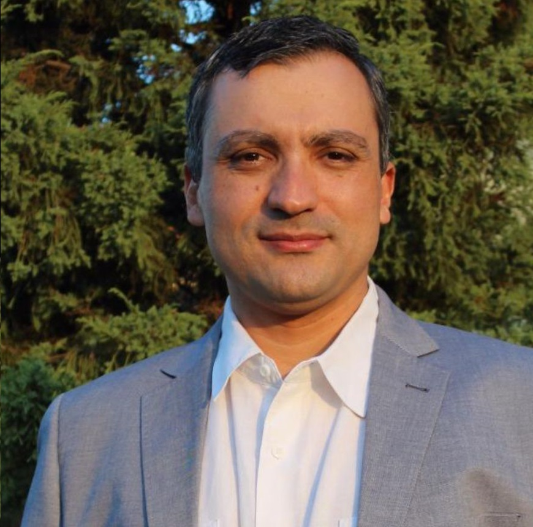

Bem-vindo
É com grande alegria e compromisso que lhe damos as boas-vindas.
Aqui, você encontrará um refúgio de compreensão, apoio e conhecimento, destinado a iluminar o caminho em direção a uma saúde mental plena e vibrante.
Lembre-se de que você não está sozinho nesta jornada. Aqui, você encontrará uma comunidade solidária de indivíduos que compartilham a mesma busca por equilíbrio e bem-estar. Encorajamos você a se envolver, compartilhar suas experiências, fazer perguntas e participar das discussões construtivas que ajudam a enriquecer nossa compreensão coletiva da mente humana.
Uma jornada rumo à saúde mental começa com o primeiro passo, e esse passo é você estar aqui. Novamente, seja bem-vindo ao nosso espaço de cuidado psiquiátrico. Estamos aqui para apoiá-lo, orientá-lo e celebrar cada vitória ao longo do caminho.
Com calorosas boas-vindas
Sobre mim
Dr. Cleber Naief
- Médico pela Universidade Federal de Minas Gerais (2000) e Psiquiatra pelo Hospital das Clínicas também da UFMG (2002).
- Residente em em Manaus - AM desde a convocação do Exército Brasileiro em 2004 para serviço militar como médico temporário.
- Trabalhei no extinto Hospital Psiquiátrico Eduardo Ribeiro (2004 a 2012), onde foi coordenador da Residência Médica em Psiquiatria por 4 anos e contribuindo para termos os primeiros psiquiatras formados no Amazonas.
- Psiquiatra da Infância e da Adolescência (2007).
- Psiquiatra Forense (2010).
- Foi fundador da Associação Amazonense de Psiquiatria e seu presidente por dois mandatos (2016 a 2022).
- Foi Diretor Regional Norte na chapa eleita da Associação Brasileira de Psiquiatria (2017 a 2019).
- Membro do Departamento de Psiquiatria da Infância e da Adolescência da ABP (2023).
Especialidades
- Médico, CRM-AM: 4.707
- Psiquiatra, RQE: 1729.
- Psiquiatra da Infância e da Adolescência, RQE: 2454.
- Psiquiatra Forense, RQE: 2820.
Endereço
Consultório particular:
Rua Raimundo Polari, nº 245. Parque Dez. Manaus - AM.
Participações em live
Autismo na vida adulta (18/04/2023)
Uso, abuso e dependência de telas na infância e na adolescência (11/07/2023)